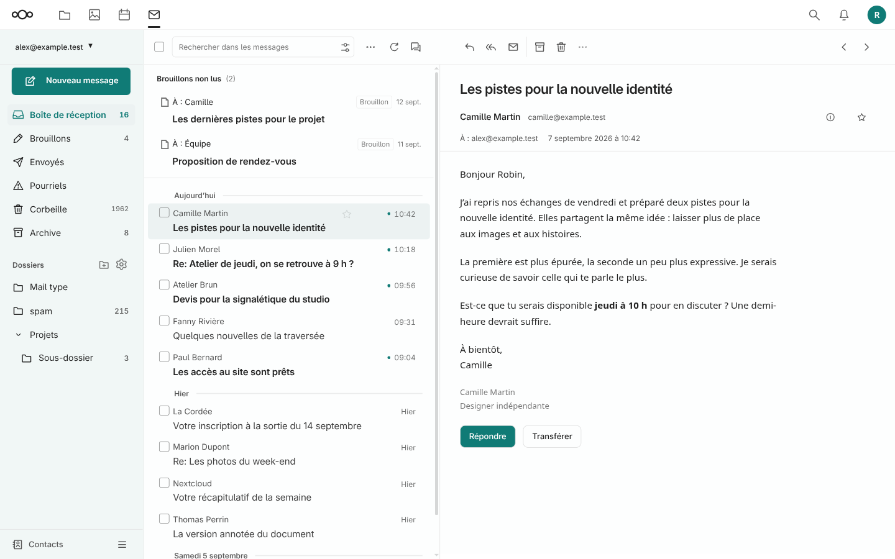
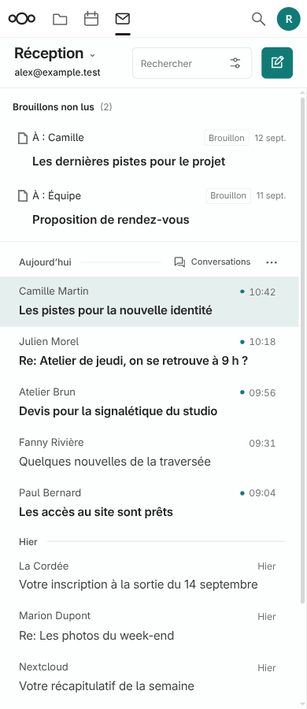
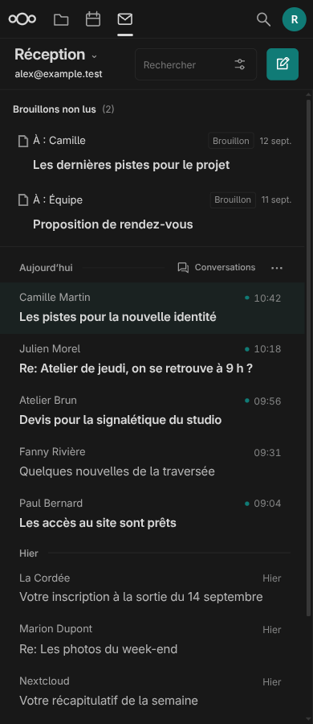

Pied Web UX 1.7.0 installée le 12 septembre 2026. Compilation réelle réussie et 32 fichiers vérifiés.



Un clic reprend la rédaction. Un brouillon marqué lu quitte la section au prochain rafraîchissement ; l’enregistrement natif le marque normalement lu. La section reste limitée au compte actif, à la première page et hors recherche. Les brouillons chiffrés se reprennent depuis leur dossier natif. Le compteur et les cases de sélection de la réception concernent toujours les messages reçus.
25 scénarios navigateur pour les brouillons, 19 vérifications PHP, 22 régressions de l’éditeur d’images, 25 vérifications de sélection filtrée, 10 du stockage des PJ et 5 diagnostics d’installation. Les modèles natifs sont réutilisés ; transport, ouverture de popup et rendu HTML sont simulés pour les tests de brouillons. Aucune session navigateur authentifiée ni opération réelle sur les mails. La compilation et les empreintes du serveur sont vérifiées via SSH.
Version GitHub 1.7.0 · Documentation · Déploiement et restauration
Sauvegarde serveur : ~/nextsnapmail-backups/pied-web-ux-v1.7.0-20260912T183527Z/rollback.py. Dépôt local : ~/localhost/nextsnapmail-pied-web.